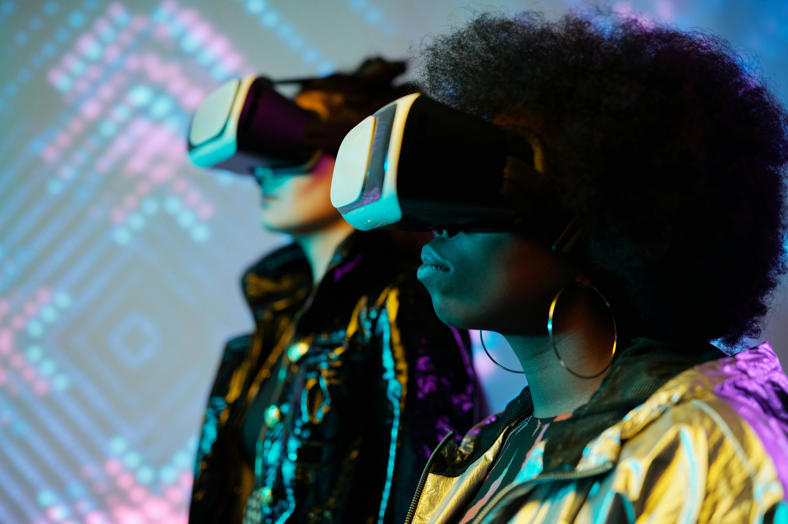
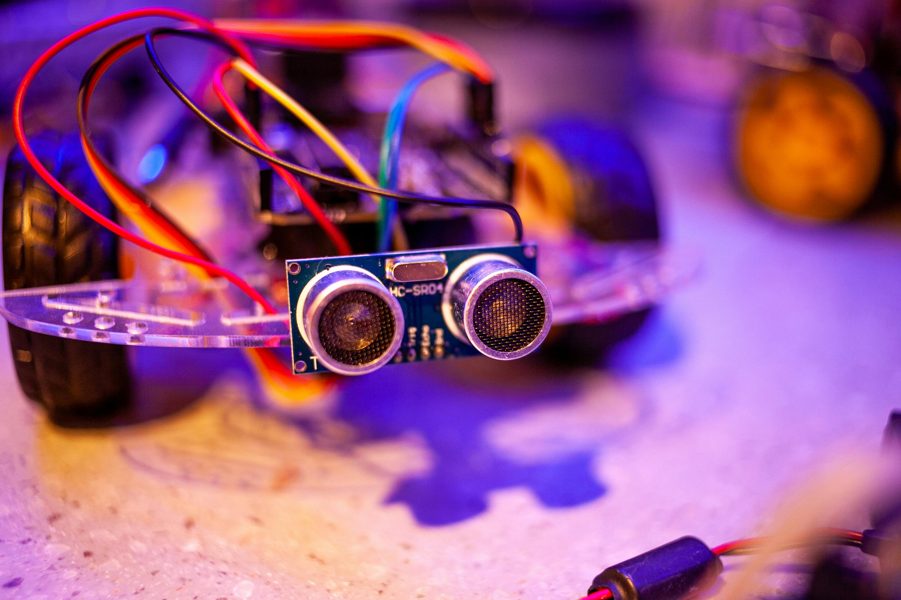

Como funciona
Um motor acoplado a base empurra a haste para fora do chassi, percorrendo cerca de 30cm até atingir o alvo. Antes de 15 segundos de ativação, a haste retorna para dentro do chasssi
Inovamos com gestão ágil e squads multidisciplinares, criando robôs assistivos e competitivos focados em impacto social e excelência técnica
O BMO é um protótipo de robô funcional desenvolvido para a RoboCup da FIAP. Com chassi compacto que combina engenharia robusta com criatividade aplicada à competição acadêmica.
Dimensões:
30x30x20 cm


Um motor acoplado a base empurra a haste para fora do chassi, percorrendo cerca de 30cm até atingir o alvo. Antes de 15 segundos de ativação, a haste retorna para dentro do chasssi
O disparo é ativado por sensores de contato, posicionados na parte frontal e traseira do robô. Ao detectar toque físico, o circuito aciona o mecanismo de avanço da haste.

VR/Realidade Virtual — Duas pessoas usando óculos de realidade virtual em ambiente colorido e futurista.

Robô Arduino — Pequeno robô montado com Arduino, sensores e fios coloridos sobre superfície.

Robô Bot — Robô branco compacto com display facial em LED em ambiente tecnológico escuro.
Multitarefa Digital — Pessoa usando smartphone e notebook simultaneamente sobre mesa de madeira.